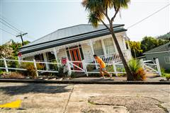
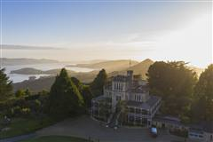
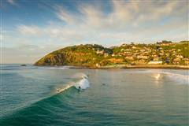
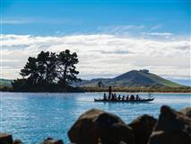
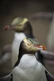
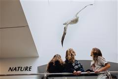
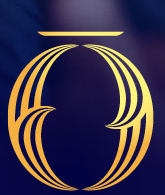
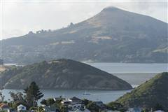
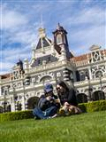

with University of OtagoBuilding the bench of Dunedin and Otago opportunities for the Far Out network.


A working map of who we're profiling across Dunedin and the University of Otago — established exporters, research spin-outs, and the city's startup roster — ahead of putting each in front of the Far Out convoy.
Far Out
Two distinct things come out of being on this list:
Dunedin's proof points
These are well-known, already-successful Dunedin tech businesses. They're not on the list for funding — they're here to show Far Out's visiting investors the calibre of company the south already produces.
Sarah Ramsay
A second-generation, family-owned Dunedin precision engineering business under Sarah and Alex Ramsay, producing more than 10,000 components a year for space and advanced aviation, 50,000+ prosthetic and surgical instruments, and 30,000 other complex parts for defence, medical, electronics and automotive clients. Already introduced to Rob Coneybeer and Annabelle Anderson.
IntroducedScott Johnston
A University of Otago spin-out built on Professor Emeritus John Tagg's discovery of the Streptococcus salivarius probiotic strains BLIS K12™ and BLIS M18™, pioneering the science of the oral microbiome. Backed by decades of research, strong IP and clinical validation, its strains are sold in more than 70 countries and licensed into leading supplement brands including NOW Foods, Life Extension and Nature Wise.
Bio receivedSpun out of the University of Otago in 2008 by Dr Helen Darling and Prof Russell Frew, Oritain uses forensic and data science to verify where raw materials actually come from — tracing cotton, coffee, food and fibre back to origin to fight fraud and support ESG compliance. Used across 20+ industries worldwide, with hubs in Auckland, London, Washington DC, Sydney and Zug, and a US$57m Series C round in 2023.
To contactAnimation Research Ltd
The sports graphics arm of Dunedin's Animation Research Ltd, Virtual Eye has supplied the 3D broadcast graphics behind the America's Cup since 1992 and worked major cricket broadcasts including the Ashes, winning an Emmy for its America's Cup app. Still Dunedin-based, still broadcasting to the world.
To contactNZX: SCT
Dunedin-based and NZX-listed, Scott Technology designs, builds and services automated and robotic production lines, with vision-guided robotics operations across Australasia, China, Europe and the US. Founded in 1913, it's one of the city's longest-running tech exporters.
To contactFounded in Dunedin in 2007 as Language Perfect by brothers Craig and Shane Smith, Education Perfect is a K-12 learning, assessment and analytics platform now used in schools worldwide, with around 160 staff still headquartered in Dunedin. Global investment firm KKR took a majority stake in a deal reported at roughly $455 million.
To contactAlex Black
Founded in Dunedin in the Macknight family home in the late 1980s, ADInstruments became the world's largest data acquisition company for life sciences, with its PowerLab and LabChart systems used in more than 100 countries. Still headquartered in Dunedin, with a team of roughly 200.
To contactJason Leong
Founded in Dunedin in 2008 by Jason Leong (CEO) and James Wigglesworth (CTO), PocketSmith is a personal finance and budgeting platform used worldwide. Recently selected as the only New Zealand company in Mastercard's global Start Path Open Banking and Embedded Finance programme.
Bio pendingAnna Campbell & Darcy Schack · zesttwellness.com
Anna Campbell and Darcy Schack founded Zestt Wellness in Dunedin during the 2020 lockdown, developing natural bioactive products for immunity and lung health. Campbell also chairs Otago Innovation Ltd.
To contactUniversity of Otago
Flagged after meeting with Greg Cook (DVC Research and Enterprise), Paul Foster-Bell, Sam Heenan and David Powell (Business Development Manager, Research & Enterprise), and cross-checked against Otago Innovation Limited's own list. Each needs a bio pulled together — their offering, where they're at with investment, and the Far Out opportunity — before we can submit them.
Physics · Q-Bifröst
Pioneering microwave-to-optical interlink technology, to enable an internet for quantum computers. Featured as the Otago Snapshot in the November 2026 SpaceBusiness@Otago newsletter — see New Zealand designs photonic & quantum growth engine.
Bio pendingProf Peter Fineran & Dr Rob Fagerlund · Microbiology & Immunology
Developing next-generation CRISPR-based diagnostics and therapeutics. The related phage-powered antimicrobial work already has some US venture capital — see the ODT coverage.
In progressProf Debbie Hay & Dr Elliott Dunn
New small-molecule therapies to address unmet need in migraine.
Bio pendingDr Zoe Tasma
A new class of migraine therapeutic drugs — same research group as Solros, a distinct project and mechanism.
Bio pendingAssoc Prof Greg Walker
Safe, high-concentration tranexamic acid to improve outcomes from life-threatening blood loss.
Bio pendingConcussion monitoring tech
Hardware and software to improve the detection and treatment of sports-related concussion injuries.
Bio pendingMicropore-based single protein detection
Technology to detect hard-to-detect proteins for human diagnostics. Also Otago Innovation's Entrepreneur in Residence, Christchurch campus.
Bio pendingProf Dione Healy
An evidence-based approach to developing self-regulation in children, already commercialised and rolled out nationwide, with potential to scale internationally.
Bio pendingDr Evelyn Armstrong & Dr Christina McGraw
Hardware and software for real-time analysis of cellular protein, carbohydrate and lipid constituents. First application: algal biofuel bioproduction optimisation.
Bio pendingAngus Lindsay · Christchurch
Gene therapy approaches for Duchenne's muscular dystrophy.
Bio pendingProf Yusuf Cakmak
A non-invasive wearable neurostimulation technology to treat respiratory conditions such as asthma.
Bio pendingTherapeutics
Added to the list — lead contact and offering still to confirm.
Bio pendingSchool of Dentistry
A clear composite material developed out of the dental school.
Bio pendingDr John Reynolds · Therapeutics
Therapeutics venture led by Dr John Reynolds.
Bio pendingGeography department
An avalanche safety app.
Bio pendingPsychological Medicine
Ketamine therapy research, alongside Douglas Pharmaceuticals.
Bio pendingDunedin Multidisciplinary Health & Development Study — pace-of-ageing work, confirm angle
The long-running Dunedin cohort study.
Bio pendingThe first eleven are drawn directly from Otago Innovation Limited's own list (names, roles and project framing taken from them). Amaroq Therapeutics still needs a confirmed founder before a bio is drafted.
From Startup Dunedin
Grace's list from Startup Dunedin, both newer and founding businesses. Each will also be asked for a short bio to submit alongside the Otago list.
Anna Barham · Managing Director · balancingmonkeygames.com
Anna and Sam Barham founded Balancing Monkey Games in Dunedin in 2017, an award-winning indie studio behind the cosy city-builder Before We Leave and its new sequel, Beyond These Stars. Anna has been Managing Director since 2020, sits on the NZGDA board, and became its Chairperson in January 2026.
Bio receivedAdam Johnston · Co-founder & CEO · ruconrails.co.nz
Adam Johnston (CEO) and Briyarne Pascoe (CTO) founded RUC on Rails in Dunedin in 2025, building the software layer for the shift of 3.6 million vehicles onto Road User Charges from 2028. Their app, RUC Pass, is live on iOS and Android with no GPS or hardware needed, and moves into retail from 2027 via an LOI with Activata and ePay covering up to 7,000 locations nationwide. Around NZ$200,000 raised and deployed to date; a seed round targeting NZ$750,000 reopens early 2027.
Keen for the eveningRei Ishikawa · karo.co.nz
Māori-owned software company building AI-enabled, data-sovereign digital tools for Aotearoa's health and social sector — reporting, PHO claiming, register management and case management across six products. 25 years of primary care experience, 300+ clients, registers for 23 PHOs and one DHB covering 3m+ patients, and 1,000,000+ claims processed a year. Looking to raise funding.
Bio pendingGreg Peyroux · Co-founder & CEO · intermentis.com
Greg Peyroux brings 20+ years across ICT, AI, commercialisation and governance to Intermentis, a Dunedin company building Soter, an AI-powered doorstep assistant that speaks with visitors, manages deliveries and expected guests, and loops in a resident or trusted contact when needed. An eight-household Whaikaha-supported pilot across a range of accessibility needs saw every household want to keep it. Targeting commercial production in 2027, seeking ~NZ$400,000 to finalise design and fund the first production run.
Bio receivedChenrong Lu · Co-founder · penguinrobotics.net
26, ex-Soul Machines and ex-Engineered Arts (lead developer on the Ameca robot's AI system), now building Penguin Robotics: full-stack robots, from electronics and actuators to their own robot OS and AI, built to feel “alive.” Prototypes include Mushie and Hammy, plus a walking Moa in progress — the first walking robot built in Australia or NZ. Their real-time streaming lipsync model reportedly beats Nvidia's Audio2Face by 10x+ on performance and speed.
Bio receivedBoyd Peacock & Andrew Long · gethomesafe.com
Boyd Peacock founded Get Home Safe in Dunedin in 2012, lone worker safety and journey management software now used by organisations including Schneider Electric, Auckland Council and Auckland DHB, and expanded into Australia, Canada, the UK and the US. Punakaiki Fund took a 17% stake in 2020 at a $3m valuation; won Innovation at the Grand Business South Awards.
Bio pendingJonny Mirkin · Founder · givenwell.com
Givenwell reimagines the employee assistance programme: employers choose what to cover and spend, staff choose their own therapist anywhere in the world. Two years in, it supports teams in 30 countries with an NPS of 69, was a top-six finalist at HR Tech Pitchfest in Las Vegas, and won a Business for Good award from the University of Otago. ARR is up 3.5x in the last 12 months; raising US$2m to build out go-to-market in NZ, Australia and the US, where it already has its first customers and is especially keen on US investors, customers and partners.
Bio receivedTrevor McIntyre · Founder & CEO (ex-ADInstruments, Nomos One, TracPlus) · radley.tax
“R&D, effortlessly” — Radley captures the R&D evidence as the work happens, with tax as the wedge: live now, pay-when-paid, with accounting, operations and IP following on the same record. 15 contracts and six-figure fees in its first three weeks selling in NZ, 112 more in pipeline, and a top-five global accounting firm negotiating to recommend it. Raising pre-seed.
Keen for the eveningTrevor McIntyre · Founder & CEO (ex-ADInstruments, Nomos One, TracPlus) · ripple.team
An operating system for teams and their AI — a Company Brain and Multiplayer AI for 10–250 person firms with no AI team, where every decision is captured with the why. Live and paying, with teams resolving 70%+ of topics without a meeting, Microsoft Teams rollouts lined up with BDO and PanPac, SOC 2 complete, and a place in Ministry of Awesome's Founder Catalyst. Raising pre-seed.
Keen for the eveningRupert Denton · Founder & CEO · spellcaster.education
A decade working with at-risk and trauma-affected teenagers in Australian secondary schools led Rupert Denton to found Spellcaster, a gamified spelling game for learners aged 9+ needing the most support, including dyslexia, other specific learning disabilities and cerebral palsy, with lesson-planning tools and progress dashboards for speech-language pathologists and teachers. Post-product and post-revenue across NZ, Australia and the US; raising from angel investors to scale globally.
Bio receivedRhys Gardner
Driver safety training and VR road-safety simulation, drawing on rural roads programmes run in Arizona and here in NZ. Rhys's own idea: a VR safety driving experience at the stadium for the Far Out drivers before they climb into the 4WDs — could be a fun addition to the day.
To contact
Chris Hilder · Kaffelogic
Hein · Radley Tax team
Contact emails are held separately with the source list — left off this page since it may be shared more widely.
The ask
This page collates the bios and overviews from across Dunedin and Otago, ready for you and Rob to read through and choose who's invited to the Dunedin evening at the Railway Station, and who might take a seat in the convoy on to Queenstown.